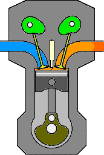
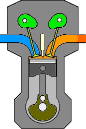

Tipos de motor
 Motor 4T
Motor 2T
Motor 4T
Motor 2T
Normalmente va propulsada por un motor de gasolina de dos o cuatro tiempos (2T y 4T), aunque últimamente los dos tiempos están siendo reservados a las cilindradas más pequeñas debido a razones medioambientales.
El motor va normalmente posicionado de modo transversal, es decir el cigüeñal es perpendicular a la marcha, independientemente del número de cilindros.